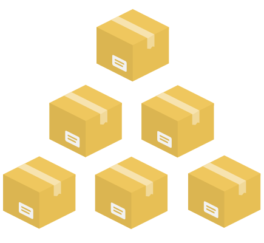

Today's HR software environment
Human resources (HR) software is a classic long tail industry. A few very large integrated talent management (ITM) suites
try to cover all the bases from hire to retire. Alongside them, a long tail of thousands of small, agile SaaS players brings
innovative solutions to every area of the HR continuum, from recruitment marketing to employment branding.
With TAS, we wanted to offer an integration marketplace where customers can simply click to assemble these exciting long
tail solutions into a secure, working HR technology stack for recruiting, growing and managing talent.
To you, the SaaS app developer, Talent App Store provides access to a large audience of potential customers who can
trial and buy your software instantly. Because Talent App Store is an integration platform, not a PaaS, you don't need
to change your programming environment or the way you host or develop your application.

Goals for TAS
At its heart, TAS is an open integration marketplace where:
- developers build apps that:
- communicate with other apps via APIs
- protect their own web pages with single sign on (SSO)
- customers (tenants):
- click to install apps, enabling API traffic to flow securely
- specify SSO rules (e.g. that candidates can sign in with Google or Facebook)
Our specific goals for TAS were:
- Click to install. We wanted to make installing HR software literally as easy as installing apps on a smartphone.
- Plug and play. We wanted to remove the tight coupling of today's HR systems, where apps are strongly subservient to a single master system. For example, if you've built a career site app that pulls jobs from an applicant tracking system (ATS), then your app should continue working as that ATS is swapped out and replaced with a different one. TAS protects your app development investment.
- Try before you buy. We wanted to provide practical, sandbox based environments where customers can install and trial new software in minutes, but in an integrated setting, working with their existing HR stack.
- Security. While keeping it easy for customers to click to install apps into their environment, we wanted to provide powerful, overarching security, enforced even if individual apps are compromised, based on industry standards such as OAuth, SAML and HMAC.
- Open. We wanted developers and customers to enjoy an open environment, free from IP concerns. Any developer can add APIs to TAS, and all APIs fall under an open source license that prevents IP restrictions or caveats. You are free to fork or adapt and TAS APIs in any way you need. Even with this openness though, all API calls are protected within TAS's secure environment with the customer pulling the levers.
- High performance. We set a goal that TAS should impose no practical performance penalty over other API platforms not offering plug and play. This goal led to some key architectural decisions, such as that TAS should not be middleware, and API traffic should flow directly between apps and not through TAS.
- Platform independant. We wanted app developers to be able to build apps in any programming language, on any framework, and host their apps anywhere.
Non-goals for TAS
We designed TAS to be as thin as possible - to do just what's needed to allow HR SaaS microservices to work
together, and no more. This philosophy means there are many things that TAS is not:
- TAS is not a central list of APIs that apps can use to talk to each other (though it does hold definitions of APIs). TAS does authorize and guide API traffic between apps based on the tenant's choices, but it does not specify what those APIs are. Where platforms like Force.com allow developers to create multitenant add-on applications that integrate into the mothership Salesforce.com application, in TAS, all apps are equal. Since there is no mothership application, just apps calling APIs on each other and protecting their resources via SSO, it follows that app developers are free to use any existing APIs, or to define their own.
- TAS is not a programming language or a framework. You write your apps in your language of choice, be it .NET, Java, php, python/django, golang, Clojure, Grails or any other modern web platform. You store your data in your chosen database, and produce and consume RESTful APIs using your framework of choice.
- TAS is not an SDK or library. Instead, apps embed or use a hosted TAS network proxy, which shields the app from dealing with security and cryptography.
- TAS is not an IaaS (like AWS) **or a hosting platform or PaaS** (like Salesforce's Force.com), but rather an iPaaS. You host your apps on your own infrastructure.
- TAS is not an ESB (Enterprise Service Bus) like Mulestoft or WSO2. API traffic flows directly between apps, and does not pass through any central server. TAS is not a bottleneck or a point of failure.
- TAS is not an IdP (identity provider) like OpenAM, WSO2 or OneLogin. TAS allows tenants to hook up their own chosen SAML IdPs and/or popular OpenID-based platforms such as Google, LinkedIn or Facebook, and to augment with additional rules (e.g. only users with email addresses like *@acme.com can log in). TAS then concentrates all of the tenant's multiple identity providers by acting as a SAML proxy so that your app (acting as a SAML service provider) sees a single, unchanging IdP which handles authentications for your app.
- TAS is not an API gateway, like Mashape Kong or Axway. Since API calls flow directly between apps, and do not pass through TAS, you might still want to place your app behind some API gateway to achieve rate limiting, analytics/metrics capture and logging, security filtering (checking the content on incoming messages for attacks), or redirection/traffic routing to different endpoints in your own infrastructure depending on the sender or the request. TAS does provide API gateway behaviour related to access control, for example the context for verifying OAuth tokens.